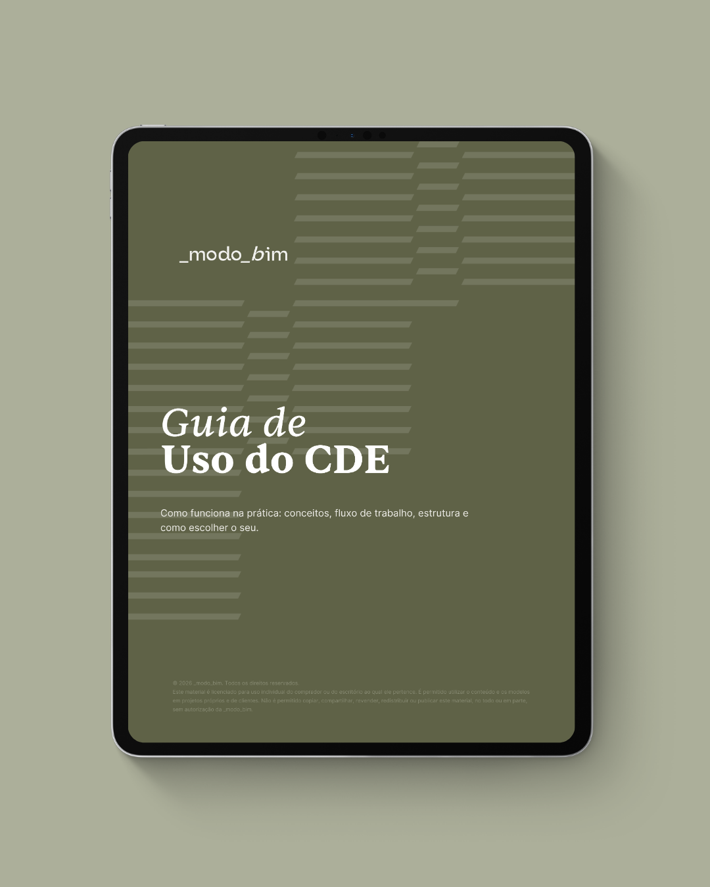

Guia em PDF
Guia de Uso do CDE
Como o ambiente comum de dados funciona na prática: conceitos, fluxo de trabalho, estrutura de pastas e como escolher o seu. É aqui que você entende onde cada arquivo do projeto deve ficar e como as versões são controladas.